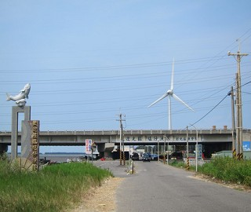 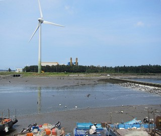
到了塭仔漁港，就可以看到對面的彰濱工業區。
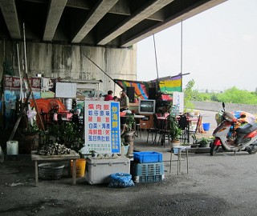 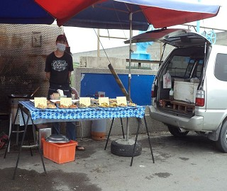
這漁港小小的，平日更沒有什麼遊客來買海產，不過樂天的漁民，沒有錢賺，
卻很開心得唱KTV，他們天天都很開心的在過每一天吧！
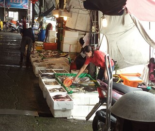 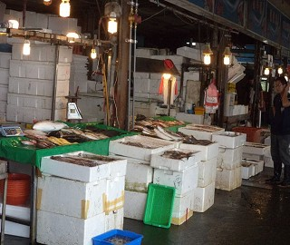
漁港有現找現賣，保證新鮮(現抓的)，店名是用漁船名子去取的。
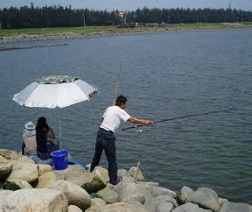 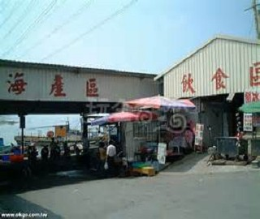
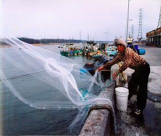
每當假日天氣情朗，釣客會前往漁港釣魚，釣完可以拿到飲食區請人代理料理。
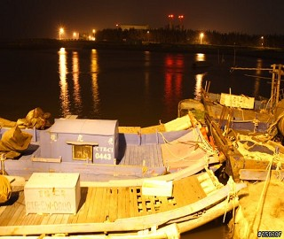 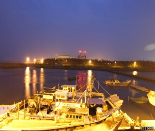
這是塭仔港晚上的夜景，很漂亮對吧!!
以下資料來自網路 http://library.taiwanschoolnet.org/cyberfair2005/hhjh2004306/wen/wen.htm(已取得原作者同意轉載)
塭仔漁港與彰濱工業區近在咫尺，而且中間開闢了一條「慶安水道」銜接西部海域，致使得塭仔漁港
日漸繁榮，嚐鮮的遊客有增無減。到海濱玩的遊客，可以順道到
塭仔漁港一遊，除了可以看看碼頭風光，最重要的就是嚐鮮。在漁港碼頭，每到下午三、四點過後，出海捕魚的漁船陸續歸來，載回來新鮮的魚貨，而在鄉公所所興
建的漁港市場設攤叫賣，遊客可以就地買到最新鮮的魚貨，當場可交由餐廳下廚料理，無論是炸、煮皆相宜，絕對是美味可口，讓您口齒留香。
「塭子」原為海濱低溼地，處處有潟湖，早期有人利用潟湖開闢漁塭，從事養殖漁業而得名。因彰濱
工業區開發，於該村西南一角闢建一人工港，因位於塭仔村而稱
為「塭仔港」。塭仔港是位於線西鄉西南邊與鹿港鎮交界的迷你漁港，水域及陸地範圍雖小，但漁民現撈的新鮮魚、蝦、蟹等貨色齊全，可謂之麻雀雖小、五臟俱
全。
線西的特色之一是「風頭水尾」，「水尾」指的是河水流到出海口的地方，線西正好位於大肚溪與洋仔厝溪的出海口，因為是鹹水與淡水交接之處，所以魚貨特
別多。而塭仔港是線西最熱鬧的海港，是數十年來許多漁民出海、捕魚、賣魚的場所，因為其不是深水港，所以必須靠天吃飯，利用每天兩次的漲潮出海，一出去就
是要十二個小時才能回來，所以又有「候潮港」之稱。
<--回塭仔村首頁 |